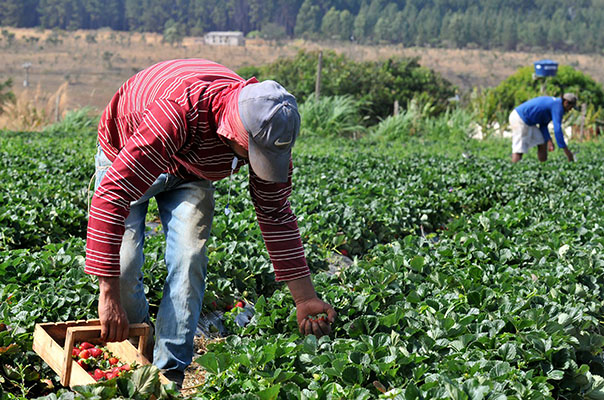

Introdução
A transição do campo para a cidade pode ser uma jornada transformadora para jovens interessados em aprimorar a agricultura. Ao se mudarem para ambientes urbanos, esses jovens têm a oportunidade de acessar novas tecnologias, métodos inovadores e redes de conhecimento que podem revolucionar a forma como o campo é cultivado.
Nas cidades, é possível explorar tecnologias avançadas como a agricultura de precisão, que utiliza dados e sensores para otimizar o uso de recursos e aumentar a produtividade. Além disso, eles podem participar de cursos e eventos sobre práticas agrícolas sustentáveis, como a hidroponia e a verticalização de cultivos, que prometem eficiência e menor impacto ambiental.
